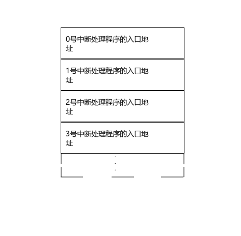
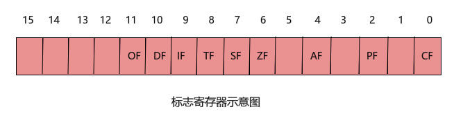
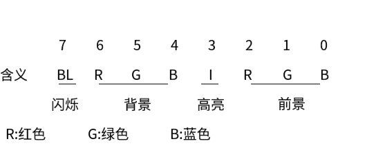
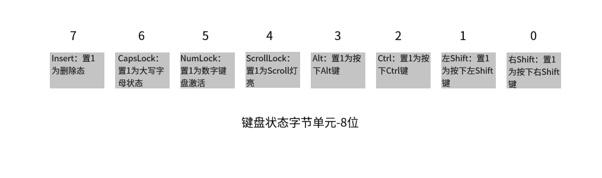

cpu具备一种能力就是：执行完当前指令后能转而去执行别处的指令
这种能力我们叫中断（interrupt），中断有不同的类型：内中断和外中断
cpu具备中断能力，cpu在执行中断的时候其底层是怎么运作的，什么样子的内存分布来支撑这种能力呢？
x86-8086架构中断的整体情况
当发生内中断时，中断信息由cpu内部提供，cpu每执行完一条指令，就会检查是否有中断产生。如果此时，有内中断发生，cpu便会转而去处理这个中断信息。
当发生外中断的时候，中断信息有外部芯片提供。大部分的外中断，cpu会根据标志寄存器的状态来决定是否要去处理中断信息。
中断信息是什么？
比如当我们写出来的程序出现除法操作，除数是0的时候，就会引发中断，cpu必须去处理这个中断。所以，中断信息就是cpu的内部或外部，发生了需要cpu去处理的紧急的任务或事件。除法错误就是其中一种。
中断信息怎么发出？
内中断发生时，cpu内部会产生中断信息，要求cpu去处理一下紧急情况，但是这个中断信息是怎么发出的呢？
这个问题我也不懂，我所了解到的是：CPU执行指令时，如果发生异常情况（例如除零错误），CPU会自动产生一个异常中断。
cpu是怎么就自动产生了一个异常中断，我不得而知。
但是cpu在接受中断信息的时候，是由中断控制器来接受的。
我们目前只局限在上层，最底层是芯片设计，操作系统是必须根据芯片的特点来编写的，感兴趣的同学可以自学一些关于芯片如何产生，处理中断信息的相关知识。有兴趣的同学，可以私信我，与我沟通，共同进步。
cpu怎么处理中断？
cpu在拿到中断信息的时候，就会把CS：IP指向中断向量表中的某个位置。所谓的处理中断，就是去执行另外一处的程序，这个“另外一处的程序” 是由BIOS系统提供的，也可以是由DOS系统提供的，也可以是由我们自己写的。
中断信息中包含了我们要去执行的程序的入口地址。
比如除零错误发生时，引发的中断类型码是0，其实就是
int 0
我们之前写
mov ax,4chh
int 21h
就是引发21h号中断，作用就是返回程序。
int 0 包含了什么信息
int是汇编指令，表示中断指令，后面的0，表示中断类型码，这个0中断类型码表示地址0000：0000处的中断处理程序的入口地址。
我们所有的中断处理程序的入口地址，都是打包放在一块的。在0000：0000地址起始处，一直到0000：03FF处，一共有1KB大小的空间，全部用来存储中断处理程序的入口地址，每个中断处理程序的入口地址都是由4个字节来存储，低位两字节存储入口地址的IP，高位两字节存储入口地址的CS。
地址0000：0000到0000：0003，这中间存储的就是我们0号中断处理程序的入口地址。
cpu通过中断类型码n，经过ip=n**4,cs=n**4+2的运算，就可以定位中断处理程序了。
之前说了，中断处理程序可以由系统，程序员，软件等来提供，‘int 21h’，表示21h中断类型码，其中的中断处理程序就是由DOS系统提供的，我们可以编写一个简单的中断处理程序——0号中断
中断向量表
刚才提到的，所有的中断处理程序的入口地址都是打包在一块的，全部存储在0000：0000地址起始的位置，这块内存我们就叫中断向量表。

外中断与端口（比如60h端口）
各种寄存器，存储设备都与CPU的地址总线，控制总线和数据总线连接，在cpu运作的时候，把它们都当作内存看待，把它们总地看成一个由若干存储单元组成的逻辑存储器-内存地址空间
cpu通过总线连接的芯片处理各种寄存器，还有以下三种：
1）各种接口卡上的接口芯片（网卡，显卡）
2）主板上的接口芯片，cpu通过控制它们来间接对外设进行控制
3）其他芯片，用来存储相关的系统信息，或者进行相关的输入输出处理（CMOS芯片）
这些芯片内部都有内存单元和寄存器。站在cpu的角度，这些寄存器就是各种芯片的端口，也是通过统一的编址，来确定一个统一的端口地址空间，cpu通过读/写端口与外设芯片进行交流。
外中断就是由外设芯片引发的，由外设芯片向cpu发送的中断信息。如我们最常使用到的键盘中断，就是由键盘控制芯片产生的，这个芯片被称为“键盘控制器8042”。
键盘控制器通过中断请求线（IRQ1）将键盘中断信号发送给cpu的中断控制器。
端口的读写
cpu是可以直接对端口进行读写的。
使用in指令和out指令，in指令表示从端口读取数据，out指令表示从端口写数据。
我们站在cpu的角度来看，in代表进入：从端口的数据进入到cpu中，表示从端口读。out表示出：从cpu传送出去的数据，写进端口。
这个指令和我们常用的mov指令做个对比。mov指令中，比如：
mov ax，bx
表示将bx的数据移到ax中，这个顺序是从右到左。
假如我们要向60h端口写数据，就需要这样写：
out 60h，al
如果要从60h端口读数据，就需要这样写：
in al，60h
注意，端口的读写指令不仅不一样，而且操作对象的顺序也是不一样的。
记住，我们只能在ax或者al中存放读/取端口的数据。
对0~255以内的端口使用al。
对256~65535的端口使用ax。
可屏蔽中断与IF标志位
大部分外设芯片发出的中断信息都是属于可屏蔽中断，可屏蔽中断的意思就是cpu可以根据实际情况来屏蔽这个中断信息（所谓的屏蔽，不是不接受这个信息了，而是接受了这个信息，但是我不管你，不按照你的要求去执行你的中断处理程序）
既然是中断信息，就说明了发生了一些需要立马去处理的事情，为何cpu还要设计出可屏蔽中断的机制呢？
主要是基于以下几个情况：
1）在特定任务执行的过程中，不能被中断打断，必须暂时屏蔽中断，等任务完成后再重新打开中断。
2）保护关键区域，在一些关键的临界区域中，需要确保操作的原子性，避免在执行过程中由中断的干扰而产生错误。其实这个不难理解，我们经常在编写子程序的时候需要设置SS：SP的值，这是一个指向栈顶的存储机制，当我们设置SS的值和SP的值的时候，是需要将这两条指令放在一块写的。
mov ax，0200h
mov ss，ax
mov sp，0
我们的cpu在执行第二条和第三条指令的时候，就是不允许有任何中断来干扰，这是设置栈顶的原子操作，虽然这是两条独立的指令，但是这是原子操作，不能分割。所以，我们在编程的时候，设置栈顶的两条语句必须放在一起写，切记不可分开，以免在某时某刻程序运行的时候发生了不可定位的错误。
3）优化性能：在某些情况下，特定任务可能需要保持高优先级，而其他中断请求可能是低优先级的。通过屏蔽中断，可以暂时忽略低优先级的中断，确保高优先级任务的连续执行，从而提高系统性能和响应时间。
4）避免中断嵌套，如果我们写的中断处理程序，出现了错误，错误导致芯片发送本中断类型码，这个中断类型码指向的还是我们的中断处理程序，那么就会产生中断嵌套。
键盘中断就是一个典型的可屏蔽中断。
不可屏蔽中断很少，无法被IF标志位屏蔽，一般来说，当不可屏蔽中断发生时，意味着严重的系统故障和紧急事件。这个中断信息是由特殊的信号线来传输（NMI信号线）
中断类型是分优先级的，谁的优先级最高就执行谁的中断处理程序，不可屏蔽中断的优先级非常高。
IF标志寄存器和sti，cli指令
cpu是怎么通过什么来控制是否处理可屏蔽中断的？

cpu内部的标志寄存器（flag），是用来存储程序状态的，每执行完一条指令，其标志寄存器里面相关的值都会根据实际情况发生改变。我们这次谈及的是IF标志位，其全称是interrupt Flag，中断允许标志，是用来控制外部中断请求的。
当IF标志位为1时，表示外部中断请求被允许，CPU会响应可屏蔽中断。也就是说，当有外部中断请求到达时（例如来自外设的硬件中断），CPU会检查IF标志位是否为1，如果是，就会响应该中断，并跳转到相应的中断处理程序。反之，如果IF标志位为0，CPU会忽略外部中断请求，不进行中断处理。
通过设置和清除IF标志位，我们可以在特定的时刻允许或禁止外部中断的响应，这在实现临界区保护和处理特定任务时非常有用。
使用sti指令（Set interrupt Flag），该指令会将标志寄存器IF标志位设置为1，从而允许cpu响应外部可屏蔽中断。
语句写法就是这样：
sti
就可以了，相反的cli指令（clean interrupt Flag）就是将标志寄存器IF标志位设置为0，从而使得cpu不响应外部可屏蔽中断。
cli
中断类型码
中断类型码是一个8位的值，取值范围是0到255，它用于查找中断向量表（Interrupt Vector Table）中对应的中断处理程序的入口地址。
整个中断向量表占据的空间是1KB，但是这255个中断类型码，DOS系统并没有用完，还有好多是空着的。
0000：0200到0000：02FF这段空间就是空着的，BIOS系统，DOS系统，任何的软件都不会去使用这段空间。
中断类型码0号到31号是由cpu(x86-8086)保留的，用于处理cpu内部的异常。而中断类型码32号到255号通常用于外部中断，如硬件中断和软件中断。
常见的内中断类型码
1）除法错误，产生中断类型码0。
2）单步执行，产生中断类型码1。我们使用的debug程序，为何其能控制cpu一条挨着一条的执行指令，所依仗的就是cpu的1号中断。
3）断点中断（Breakpoint Interrupt）是由中断类型码3来控制的。断点中断通常是用于调试目的。当CPU执行到一条带有调试断点（breakpoint）的指令时，会触发中断类型码为3的异常，即断点中断。断点中断的作用是暂停程序的执行，以便程序员可以检查程序的状态、变量值、执行流程等，进行调试和错误排查。我们经常写c程序的时候经常使用断点调试，其底层机理就是这个中断类型码3。
4）执行汇编指令into，可以产生中断类型码4，这条指令是Interrupt on Overflow的缩写，其主要是命令cpu去检查OF标志位（Overflow），如果标志为1，表示上一条指令发生了溢出，那么就触发中断，去执行中断处理程序。
这条指令在现代x86体系结构中已经被弃用，它在现代处理器中可能会引起性能问题。现代的操作系统和应用程序中，通常会采用更灵活，更高级的异常处理机制来处理溢出问题。
5）int指令本身所触发的中断。其作用就是去调用别的中断处理程序，由int指令所触发的中断属于软中断（软件中断）。
软中断与硬件中断
软中断是一种通过软件方式触发中断的机制。这个机制便可以让程序员来根据需求触发中断。
那硬中断呢？
硬件中断是由外部设备发出的中断请求。
软中断与硬件中断的触发方式不同，软中断是通过执行指令而触发的，而硬件中断是由硬件设备发出的中断请求。
我们编写的程序中，使用的就是软中断，编写让cpu执行特定的汇编指令来触发中断。
我们常这样写：
mov ax，4c00h
int 21h
第二条指令就是引发21h号中断，程序停止，扫描中断向量表，根据中断类型码所指向的处理程序入口地址，来执行21号中断类型处理程序。
BIOS的开机启动与DOS中断例程的安装过程
BIOS的开机启动过程：
1）当计算机通电或重启时，CPU从预定义的启动地址（通常是ROM BIOS芯片的起始地址）开始执行代码。DOS系统中就是FFFF：0000处的代码，通常，这处的指令是一个跳转指令。
2）跳转指令执行后，就去执行硬件系统检测和初始化。初始化就是将BIOS提供的中断例程登记到中断向量表中。
（BIOS是固化在主板上的一组底层软件程序，它负责初始化硬件设备（如内存、硬盘、键盘、显示器等），并加载操作系统引导程序。）
3）初始化完成后，就调用int 19h中断例程去进行操作系统的引导。
4）BIOS根据设定的启动顺序（通常为先从软盘、硬盘或光盘加载），尝试从这些设备上寻找可引导的介质。如果找到可引导的介质（比如硬盘上的主引导记录），BIOS会将引导扇区加载到内存的指定位置，并跳转到该位置执行引导程序。
5）引导程序（通常是操作系统的引导加载程序）负责加载完整的操作系统内核，并将控制权转交给操作系统，使其继续执行。
注意，我们是可以通过编程来改变FFFF：0处的指令，使其执行我们的程序，通过我们的程序来间接进行后续的硬件检测和初始化。
BIOS提供的中断例程
int 19h中断例程
BIOS执行的第一个中断例程就是19h号中断，这个中断是进行操作系统的引导
int 10h中断例程及其功能号
BIOS提供的int 10h中断例程中，有很多和屏幕输出相关的子程序。
我们可以调用int 10h中断例程，选择想要的功能号（子程序），来达到想实现的目的：
int 10h中断，2功能号的作用就是设置光标位置。
mov ah,2 ;选择2功能号
mov bh,0 ;选择在第0页放置光标
mov dh,5 ;选择在第5行放置光标
mov dl,12 ;选择在第12列放置光标
int 10h ;引发中断，执行功能号
int 10h中断，还有显示字符的9功能号：
mov ah,9 ；选择9功能号
mov al,'L' ；选择字符
mov bl,7 ；选择颜色属性
mov bh,0 ；选择第0页
mov cx,3 ；设置字符重复个数
int 10h ；引发中断，执行功能号
不管是BIOS提供的，还是DOS提供的中断例程，选择的功能号必须放在ah寄存器中。
上述汇编指令中，其颜色属性：

int 13h中断例程：对磁盘读写
我们通过控制磁盘控制器来访问磁盘，以扇区为单位对磁盘进行读写。当读写扇区，我们使用的是BIOS提供的对扇区进行读写的中断例程。
我们需要给出面号，磁道号，扇区号。面号有两个，0面和1面（从0开始），磁道号也是从0开始，而扇区号是从1开始的。
；es：bx已经指向接受从扇区读入数据的内存区
mov ah,2 ；选择功能号（读扇区）
mov ch,0 ；选择磁道号
mov cl,1 ；选择扇区号
mov dl,0 ；选择驱动器号
mov dh,0 ；选择磁头号（面号）
mov al,1 ；选择读取的扇区数目
int 13h
同理，当我们将ah的参数换成3，即表示写扇区，而此时es：bx指向的就是将要写进扇区的数据首地址，其他的没有变化。
int 9h中断例程
刚才提到了60h端口和键盘控制器。
键盘控制器用来接受键盘的中断信息，60h端口是用来存储键盘的键值。
BIOS提供的int 9h中断例程就是处理这个键盘中断的。
中断信息是由键盘的控制芯片发出，cpu如果此时的IF标志为1，那么就执行键盘中断。
键盘原理
先再看一遍文章前面的这个标题内容，点击右边目录跳转：
外中断与端口（比如60h端口）
键盘中每一个键都是一个开关，键盘中有一个芯片（这个芯片就是键盘控制芯片）对键盘上的开关进行扫描。
当我们按下一个键时，开关接通，芯片会产生一个扫描码，记住，我们此时是按下去了，键还没有松开。
这个扫描码就叫通码，记录了键在键盘的位置，然后将这个码送到主板上的相关接口芯片的寄存器中，该寄存器的端口地址就是60h。
我们松开键，此时也会产生一个扫描码，这个码叫做断码。
断码与通码之间的差别就是：断码=通码+80h
| 键 | 扫描码 | 键 | 扫描码 | 键 | 扫描码 | 键 | 扫描码 |
|---|---|---|---|---|---|---|---|
| Esc | 01 | U | 16 | H | 23 | B | 30 |
| 1~9 | 02~0A | I | 17 | J | 24 | N | 31 |
| 0 | 0B | O | 18 | K | 25 | M | 32 |
| - | 0C | P | 19 | L | 26 | ， | 33 |
| = | 0D | [ | 1A | ； | 27 | . | 34 |
| Backspace | 0E | ] | 1B | , | 28 | / | 35 |
| Tab | 0F | Enter | 1C | 、 | 29 | Shift(右) | 36 |
| Q | 10 | Ctrl | 1D | Shift(左） | 2A | PrtSc | 37 |
| W | 11 | A | 1E | |2B | Alt | 38 | |
| E | 12 | S | 1F | Z | 2C | Space | 39 |
| R | 13 | D | 20 | X | 2D | CapsLock | 3A |
| T | 14 | F | 21 | C | 2E | F1~F10 | 3B~44 |
| Y | 15 | G | 22 | V | 2F | NumLock | 45 |
| ScrollLock | 46 | _ | 4A | End | 4F | Del | 53 |
| Home | 47 | (左箭头） | 4B | (下箭头) | 50 | ||
| (上箭头） | 48 | (右箭头) | 4D | PgDn | 51 | ||
| PgUp | 49 | + | 4E | Ins | 52 |
这个是通码表，断码表在通码表的基础上加上80H。
扫描码是先发送到60h端口。记住，扫描码的产生是由键盘控制芯片贡献的，而键盘控制芯片在键盘内部，键盘是独立在电脑外面的，不在主机里面。
扫描码送到键盘控制器里面的60h端口。键盘控制器在主板上，当键盘控制器收到扫描码后，就向cpu发送中断请求（9h号中断），cpu收到中断请求后，便跟之前说的那样分情况处理。
（键盘控制器和键盘控制芯片别弄混了，一个在主板上，一个在键盘里。）
如果执行了int 9h中断，cpu便会处理这个端口的扫描码：
cpu从60h端口读出扫描码，判断该码是字符码还是控制码，如果是字符码，就将其和对应的ASCLL码一块放进内存的BIOS键盘缓冲区。
如果是控制码（Ctrl）或者切换键码（CapsLock），就将其转变为状态字节，存入内存中存储状态字节的单元（这个内存单元是0040:17。
这个int 9h中断处理程序，我们也是可以自己编写来代替的。
int 16h中断例程
还记得吗，我们按下一个字符键的时候，cpu通过IF标志位来确定是否执行int 9h中断例程。我们假设IF标志位为1，执行int 9h中断例程，此时，cpu所做的不过是将键盘数据写进BIOS键盘缓冲区。
记住哦，到这一步，只是进了内存里面，还没有任何作用。
BIOS提供了另一个中断例程-int 16h中断例程，这个中断例程的0功能号就是从BIOS键盘缓冲区里面读取数据。
mov ah,0 ;选择0功能号
int 16h ;执行中断
返回的结果呢就是ah寄存器存储的是扫描码，al寄存器存储的是ASCLL码。我们在编写程序的时候，如果需要键盘输入，就可以调用这个中断例程。
int 16h中断在读取缓冲区的具体流程是这样的：
1）检测键盘缓冲区是否有数据
2）如果没有数据，就继续做第1步
3）读取缓冲区第一个子单元中的数据，送入ah，al寄存器中
4）将读取的键盘输入从缓冲区中删除
这个键盘缓冲区不大，有16个字单元，但最多只能装15个按键数据。键盘缓冲区的内存区管理机理是数据结构中的环形队列。
键盘状态字节
如果我们按下的不是字符键，那么其键值就不会进入到键盘缓冲区，而是通过键盘状态字节来存储。前面提到了，这个键盘状态字节的内存单元是0040：17。

4号位里面的ScrollLock大家可能用的不多，现在有些键盘都没有这个键，那这个键的具体运用是什么呢？我帮大家问了一下ChatGPT，下面是ChatGPT的回答，给大家看一下：
Scroll Lock键是计算机键盘上的一个特殊功能键，通常位于键盘的顶部区域。然而，它的功能并不像其他常见的功能键（例如Shift、Ctrl、Alt等）那样常用，因此很多用户可能对它的作用并不熟悉。
在早期的计算机时代，Scroll Lock键的作用主要是控制屏幕滚动（scrolling）功能。在文本模式下，这个键可以用来决定光标是否会随着文本内容的滚动而移动。然而，随着计算机技术的发展和图形界面的普及，这个功能逐渐变得不常使用，并且在很多现代操作系统和应用程序中，Scroll Lock键已经没有了具体的功能。
目前，Scroll Lock键的主要用途是在某些特定的情况下，比如在电子表格程序（例如Microsoft Excel）中，可以用来控制光标的移动。当Scroll Lock键处于开启状态时，按上下左右箭头键不会导致选中单元格的变化，而是使得整个工作表随着光标的移动而滚动。当Scroll Lock键处于关闭状态时，按上下左右箭头键会导致选中单元格的变化而不影响工作表的滚动。
需要注意的是，Scroll Lock键的功能在不同的操作系统和应用程序中可能会有所不同。因此，在大多数情况下，用户无需特别关心或使用Scroll Lock键。如果你不确定某个程序或系统中Scroll Lock键的具体功能，可以查阅相关文档或使用说明来了解其用途。
DOS提供的中断例程
int 21h中断例程及其功能号
我们编写的程序在最后面都会有两行汇编指令：
mov ax,4c00h
int 21h
其中调用21h号中断例程，选中的是4ch功能号，这个作用就是实现程序返回。
将语句拆分就是：
mov ah,4ch ；选择功能号
mov al,00h ；设置返回值
int 21h ；引发中断，执行功能号
int 21h中断例程中，还有9功能号，其作用是在光标处显示字符串，要求呢，就是这个字符串必须以"$" 结尾，字符串的源地址必须用ds：dx来指向：
;ds:dx 已经指向字符串
mov ah,9 ;选择功能号
int 21h 引发中断，执行功能号
我们以后显示字符串，就可以直接调用DOS系统提供的中断例程来实现，不需要自己编写了。
好了，大致就这些，有任何问题的可以与我沟通，点击”关于我“，便可以找到我的联系方式。
If you like this blog or find it useful for you, you are welcome to comment on it. You are also welcome to share this blog, so that more people can participate in it. All the images used in the blog are my original works or AI works, if you want to take it,don't hesitate. Thank you !